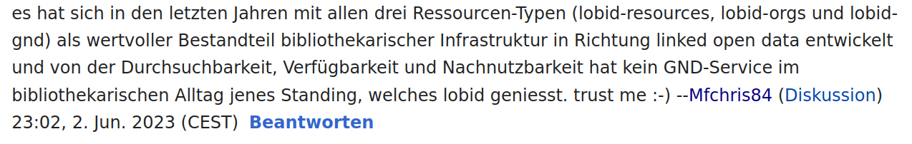
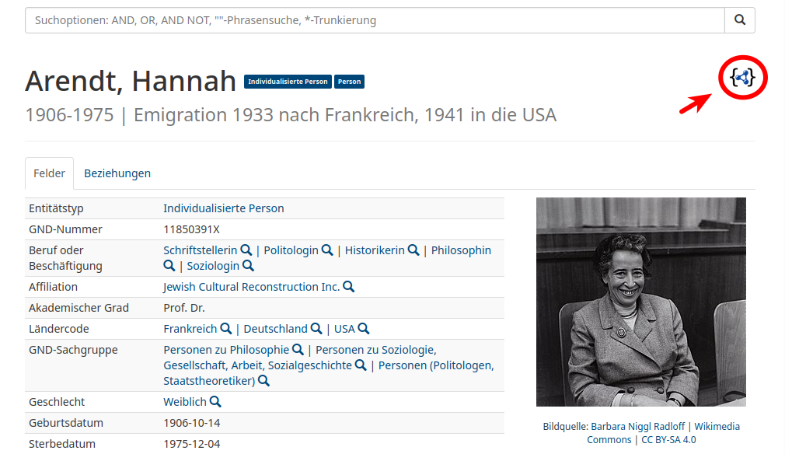
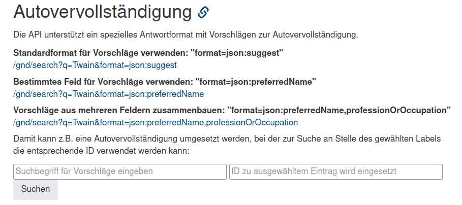
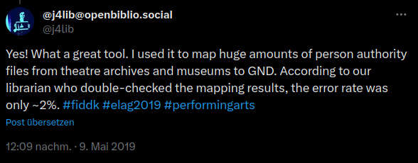
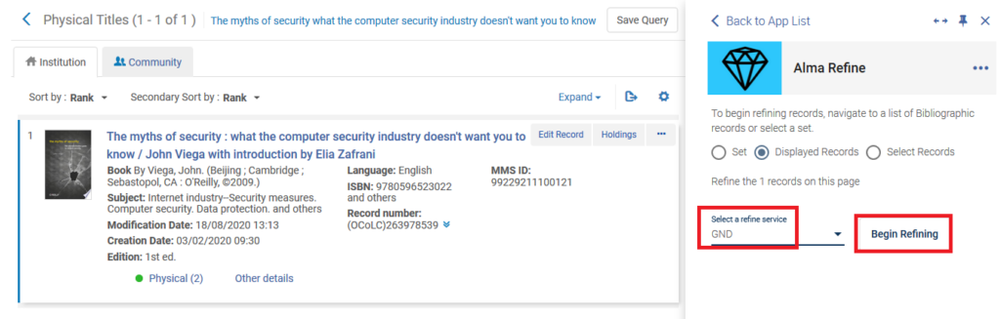

lobid als lesende Schnittstelle zur GND
Adrian Pohl &
Metadateninfrastruktur,
Hochschulbibliothekszentrum NRW (hbz)
DNB, Frankfurt/Main, 2023-10-12
Workshop zur verbesserten Integration der GND in der Erschließung
Diese Präsentation:
https://slides.lobid.org/2023-10-12-gnd-workshop/ (PDF)

Was ist lobid?
lobid führt zentrale bibliothekarische Datensets aus verschiedenen Quellen zusammen,
macht sie web-konform,
und stellt sie zur freien Nutzung zur Verfügung (CC0).
lobid-Datenquellen und -Anwendungen

Programmierschnittstellen (APIs) entkoppeln Anwendungen von Datenquellen, Formaten & Systemen
APIs ermöglichen Integration in Drittanbieter-Software
lobid-gnd
Der beliebteste lobid-Dienst
Mehr als 120 Millionen Abfragen im Jahr (Quelle)
Findet in verschiedensten Bereichen Anwendung: Bibliotheken, Archiven, Digital Humanities...
Zufriedene Nutzer:innen
Lob it!
a. Die Daten

JSON-LD-Link
JSON-LD-Daten

Browser-Plugin z.B. JSON Lite
JSON-LD-Daten

Hier mit curl und jq für Formatierung und Farbe
b. Web-API

Abfragemöglichkeiten
JSON-LD-Daten in Elasticsearch-Index
Elasticsearch- / Lucene-Suchsyntax
Suchsyntax
| Feldsuche |
|
| Boolsche Suche |
|
| Trunkierung |
|
| Intervalle |
|
| Existenz |
|
Kombinierbarkeit für komplexe Abfragen
Personen, die während der NS-Zeit in Köln geboren wurden

Sehr beliebt: Autovervollständigung
Beispiel lobid

Was ist Reconciliation?
Abgleichen / Matchen eigener Daten (z.B. Namen von Personen) auf GND-Einträge
Anreicherung durch Übernahme von spezifischen Feldern der gematchten GND-Einträge
Mappen großer Mengen von Personendaten auf die GND
Abgleich & Anreicherung von Bauhaus-Archivdaten
 Unter Nutzung von OpenRefine und der entsprechenden lobid Reconciliation API
Unter Nutzung von OpenRefine und der entsprechenden lobid Reconciliation API
Annotation/Named Entity Linking in digitalen Editionen
 Quelle: Dokumentation des TEI Publisher
Quelle: Dokumentation des TEI Publisher
Standardisierung & W3C Community Group
W3C Entity Reconciliation Community Group
Ziele
Dokumentation und Verbesserung des Protokolls der OpenRefine Reconciliation API
Protokoll als Standard für den Datenabgleich im Web vorantreiben
Werkzeuge rund um das Protokoll bereitstellen
Testbench
Ein Werkzeug zum Testen von Reconciliation-Services
Ein zentrales Verzeichnis verfügbarer Reconciliation-Services (aktuell 38)
Census
Überblick über das Reconciliation-Ökosystem
Verfügbare Services, Clients, Software-Bibliotheken
Andere Clients als OpenRefine
Alma Refine
Cocoda

Specs
Spezifikation des Protokolls für Datenabgleich und -anreicherung
Weiterführende Informationen
- Stefan Dumont (2018): correspSearch: Neue Tools, neue Daten – und eine Auszeichnung https://dhd-blog.org/?p=10632
- Pascal Becker (2021): Integration der gemeinsamen Normdatei in DSpace auf Basis von lobid (Vortragsfolien)
- Blogbeiträge mit lobid-gnd-Bezug des FDMLab am Landesarchiv Baden-Württemberg (2021 ff) https://fdmlab.landesarchiv-bw.de/tag/lobid/
- Michael Markert (2023): Abgleich 'unsauberer' Ortsnamen mit der GND in OpenRefine (Videotutorial), inklusive Clustering und unscharfer Suche mit alten Schreibweisen https://www.youtube.com/watch?v=tCdluPq5GkA
- Steeg, Fabian / Pohl, Adrian / Christoph, Pascal (2019): lobid-gnd – Eine Schnittstelle zur Gemeinsamen Normdatei für Mensch und Maschine. In: Informationspraxis 5(1). https://doi.org/10.11588/ip.2019.1.52673
- Steeg, Fabian / Pohl, Adrian (2021): Ein Protokoll für den Datenabgleich im Web am Beispiel von OpenRefine und der Gemeinsamen Normdatei (GND). In: Qualität in der Inhaltserschließung. https://doi.org/10.1515/9783110691597-013